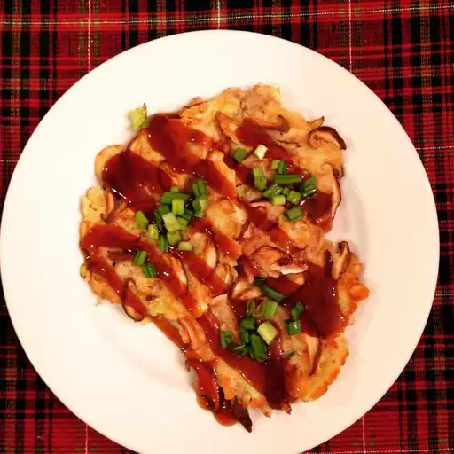

Okonomiyaki

Description
Okonomiyaki are savory pancakes that you can make with whatever you like! The name okonomi translates as "what you like" in Japanese and the word yaki means "cook or grill." Serve with your favorite sauce: sweet and sour, Tonkatsu, sweet chili, etc.
Ingredients
- 1 cup chopped cooked chicken
- 1½ cups thinly sliced napa cabbage
- ¼ cup shredded carrots
- 3 green onions, chopped
- 12 fresh green beans, cut into ½ inch pieces
- 1 small green bell pepper, cut into thin strips
- 1 small zucchini, cut into thin strips
- 3 large eggs, lightly beaten
- ¾ cup all-purpose flour
- ¾ cup chicken stock
- 2 teaspoons soy sauce
- 1 teaspoon vegetable oil
- ¼ teaspoon toasted sesame oil
Steps
- In a large bowl, mix chicken, cabbage, carrots, green onions, green beans, green bell pepper, and zucchini. In a separate bowl, beat together eggs, flour, chicken stock, and soy sauce. Pour batter over chicken mixture and toss to thoroughly coat.
- Mix vegetable oil and sesame oil in a skillet over medium heat. Scoop about 1/4 cup batter into skillet, enough to make a 2 1/2 inch circle. Cover and cook 4 minutes, or until the bottom is golden brown. Flip and continue cooking 4 minutes, or until cooked through. Drain on paper towels.